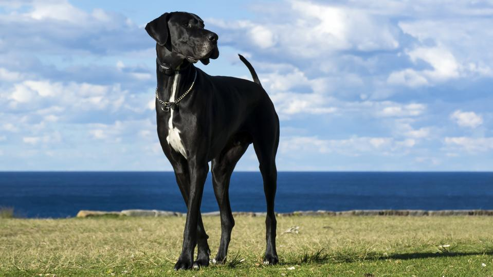

Great Dane

Information
The Great Dane is a German breed of large mastiff-sighthound, which descends from hunting dogs of the Middle Ages used to hunt bears, wild boar, and deer. They were also used as guardian dogs of German nobility. It is one of the two largest dog breeds in the world, along with the Irish Wolfhound.[1][2][3]
In the middle of the 16th century, the nobility in many countries of Europe imported strong, long-legged dogs from England, which were descended from crossbreeds between English Mastiffs and Irish Wolfhounds. They were dog hybrids in different sizes and phenotypes with no formal breed.[4] These dogs were called Englische Docke or Englische Tocke – later written and spelled: Dogge – or Englischer Hund in Germany. The name simply meant “English dog”. Since then, the English word “dog” has come to be associated with a molossoid dog in Germany[5] and France.[6] These dogs were bred in the courts of German nobility, independent of the English methods, since the start of the 17th century.[7][8]
More: https://en.wikipedia.org/wiki/Great_Dane.
Fun facts
They’re certainly great, but did you know they’re not Danish? Dogs resembling Great Danes appear as far back as carvings in ancient Egypt, but the modern Great Dane was actually bred in Germany in the 1800s as a boar-hunting beast. Today, these giant dogs make beloved family pets. They are often described as “the Apollo of dogs,” thanks to their grace, courage, stature, and beauty. Here’s everything else you need to know about these colossal canines: A male Great Dane can reach up to 32 inches at the shoulder and weigh a massive 175 pounds. Females are slightly smaller, at up to 30 inches and 140 pounds — and both males and females can tower over many humans when they stand on their hind legs. Despite their size, Great Danes are elegant, and even regal in their gait and disposition.
More: https://www.akc.org/expert-advice/lifestyle/8-facts-about-great-danes/.